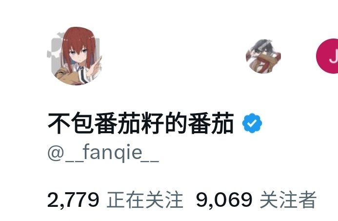

番茄🍅
@bcfqdtfqz
嗯简单介绍一下自己
我是番茄，只是一个很普通的05年的笔电男大，兴趣爱好基本没有，你也可以把我算是半个民科，我为数不多断断续续玩的只有舟。
这里是我小号，准确来说是某阵子出了事情开了新号，后面没事了就重新用大号发梗图了，然后这个号重新塞我的一大堆碎碎念。
当然，这个号开蓝v的目的只是为了能够留足空间写长长的碎碎念，倒没啥想法能够有多少人真正看到
为了验证大小号关系就截图了一张合影👇，当然如果你不放心我也可以用大号私信你眨眨眼🤪
